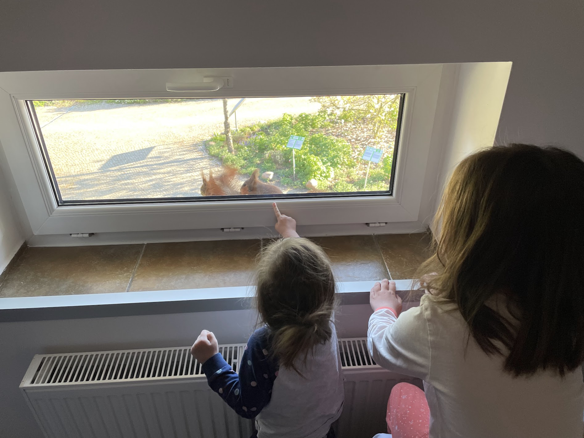
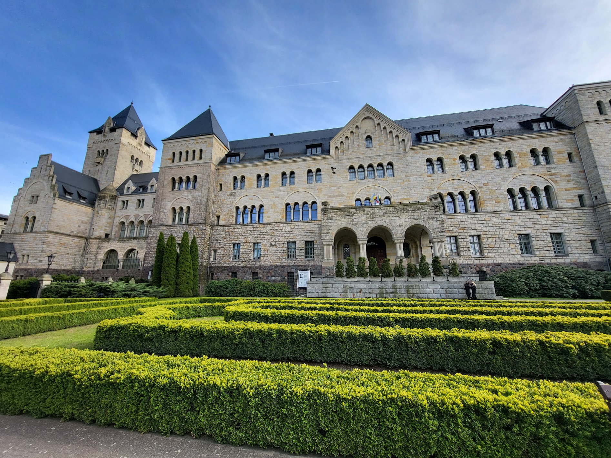
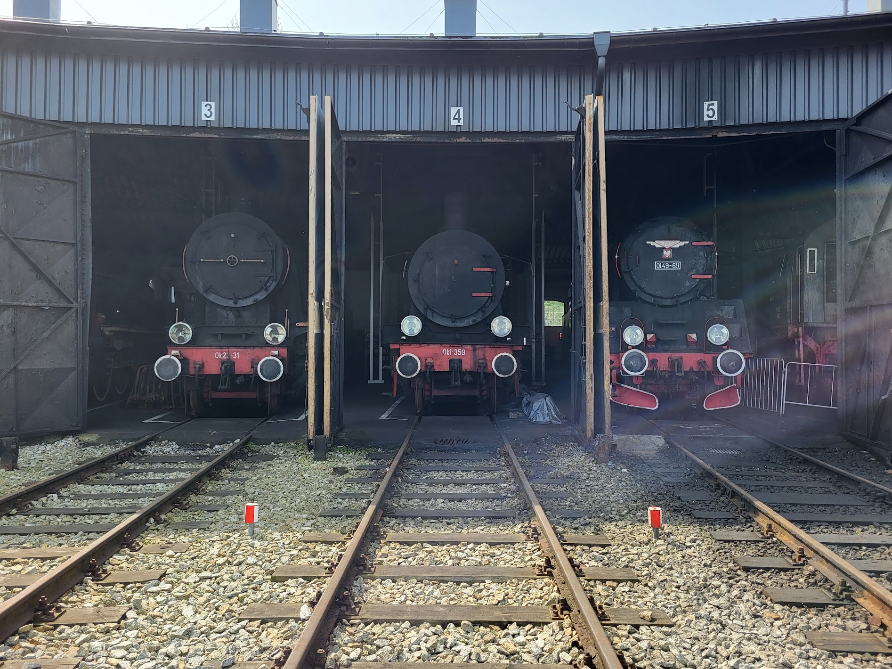
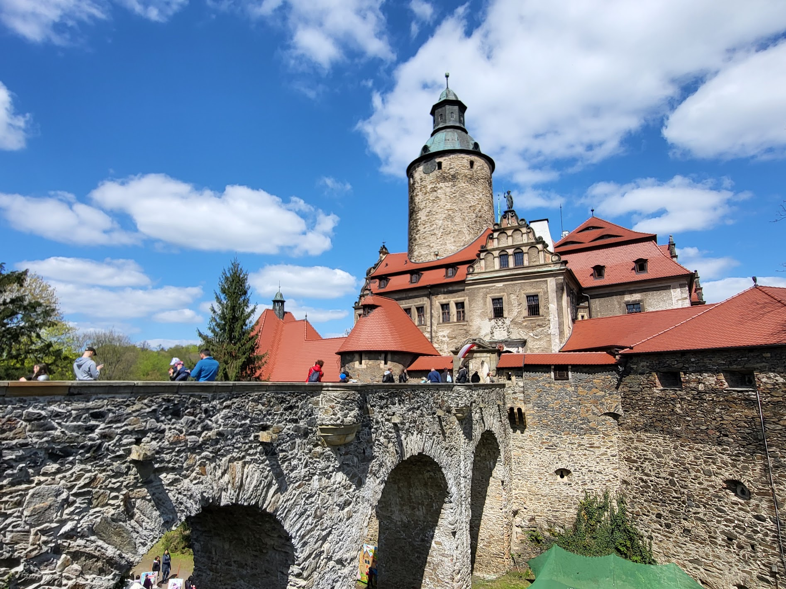
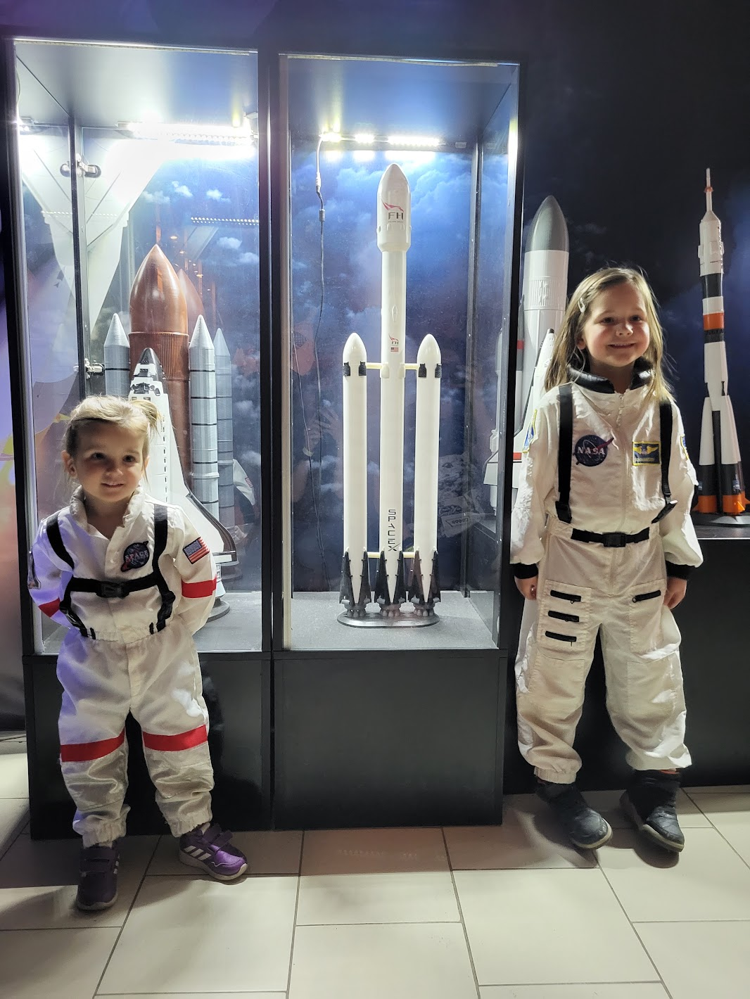
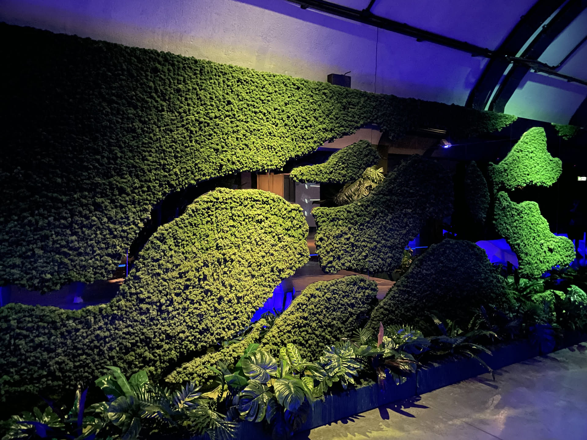
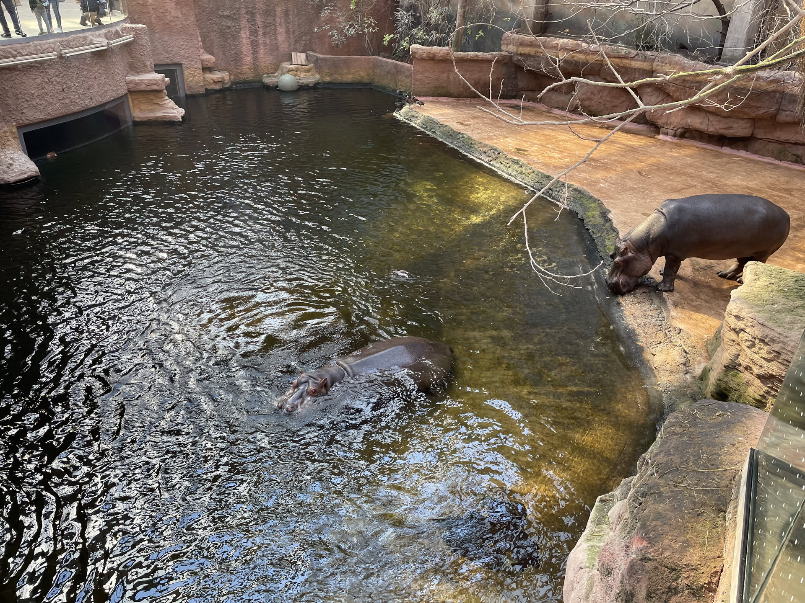

Plan wycieczki
Zwiedzone miejsca
- Jasna Góra w Częstochowie
- Poznań
- Parowozownia Wolsztyn
- Zielona Góra
- Zamek Czocha
- Brama Czasu w Jeleniej Górze
- Jelenia Góra
- Wrocław
- Hydropolis
- Wrocławskie ZOO i Afrykarium
Czas wycieczki: 4 dni
Skład osobowy: 2 dorosłych, 2 dzieciaki
Przejechane kilometry: około 1270
Punkt początkowy i końcowy: Sułkowice
Podczas tej majówki chcieliśmy zobaczyć te miejsca w Polsce, które na codzień nie są nam po drodze a które
warto zobaczyć. W Poznaniu i Wrocławiu byliśmy już bez dzieciaków, więc tym razem postawiliśmy głównie na
atrakcje rodzinne. Mieliśmy sporo szczęscia, do udało nam się dosłownie uciec przed deszczem - za każdym
razem, kiedy jechaliśmy do nowego miejsca, w poprzednim zaczynało padać.
Bilety kupiliśmy z wyprzedzeniem tylko do Rogalowego Muzeum Poznania, we wszystkich innych miejsach
wchodziliśmy z zasadzie bez kolejek (po za zamkiem Czocha, ale o tym napiszę w dalszej części).
Plan wycieczki
Trasa
Zwiedzanie
Jasna Góra, Poznań i Parowozownia Wolsztyn
Pierwszym punktem na naszej trasie była Jasna Góra. Zrobiliśmy sobie spacer po murach i porozmawialiśmy z dziewczynkami o historii tego miejsca. Kolejny dzień przywitał nas niespodzianką, bo w oknie sypialni dziewczynek pojawiły się dwie wiewiórki - nie jestem pewna kto był bardziej zainteresowany tym spotkaniem, dzieciaki czy wiewióry. Kolejny przystanek do Poznań i tam zaczeliśmy od wizyty w Rogalowym Muzeum. Po za poznaniem hisotrii rogala i możliwością obejrzenia poznańskich koziołków z, jak sami twierdzą, najlepszego miejsca, można tutaj wziąć udział w samodzielnym zrobieniu rogala - ale nie robimy całych sami, różne osoby z widowni są proszone do różnych etapów. Tak czy inaczej miałam okazję pokroić ciasto kataną. Po wyjściu z muzeum pospacerowaliśmy jeszcze po Poznaniu a potem pojechaliśmy do Parowozowni Wolsztyn. Spędziliśmy tam sporo czasu, bo nie było można było ominąć żadnego pociągu, do którego dało się wsiąść. 🙃



Zwiedzanie
Zielona Góra, zamek Czocha i Jelenia Góra
W Zielonej Górze zaczęliśmy od wizyty w Centrum Nauki Keplera, gdzie dzieciaki mogły wziąć udział w różnych doświadczeniach i eksperymentach. Spędziliśmy tam naprawdę dużo czasu. Następnie poszliśmy na spacer po mieście połączony oczywiście z lodami i poszukiwaniem bachusików. Kolejnego dnia pojechaliśmy do Zamku Czocha - dobrze, że byliśmy tam z samego rana, bo okazało się, że jest tam organizowane wydarzenie dla dzieciaków w motywie Alicji w Krainie Czarów. Po zwiedzeniu wnętrz zamku wzieliśmy więc udział w róznych animacjach na dziedzińcu a potem pojechaliśmy dalej, do Jeleniej Góry. Tam najpierw poszliśmy do Bram Czasu - ciekawa atrakcja ale raczej dla dzieci niż dla dorosłych. Dzień zakończyliśmy spacerem po mieście, które swoją drogą ma naprawdę sporo uroku.

Zwiedzanie
Wrocław
Do Wrocławia dojechaliśmy kolejnego dnia i najpierw wybraliśmy się do Kosmoparku, czyli interaktywnej wystawy poświęconej kosmosowi. Następnie dotarliśmy do Hydropolis, czyli jednego z niewielu na świecie interaktywnego centrum wiedzy o wodzie. Jest ono zlokalizowane w zabytkowym, podziemnym zbiorniku z XIX wieku. Tym, co dziewczynom spodobało się najbardziej, była możliwość wzięcia udziału w różnych doświadczeniach i eksperymentach. Na zakończenie dnia wyruszyliśmy na poszukiwanie krasnali wokół rynku - dziewczyny nie chciały odpuszczać więc ostatnie krasnale udało się znaleźć praktycznie już po zmroku. Ostatni dzień naszej majówki spędziliśmy we wrocławskim ZOO i Afrykarium. W naszej wycieczkowej ekipie mamy trzech fanatyków ogrodów zoologicznych, więc nie było innej opcji jak zostać tam cały dzień.


